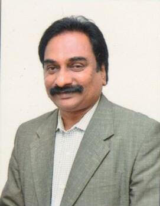
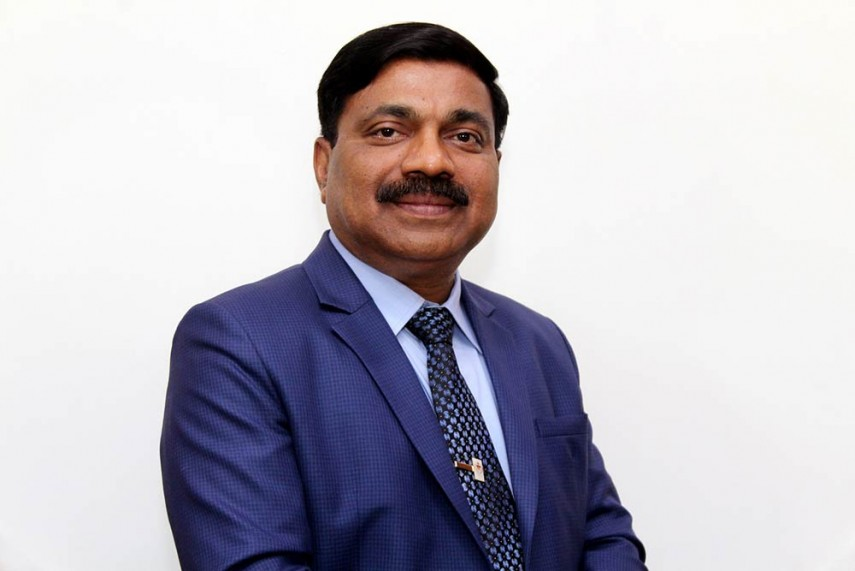
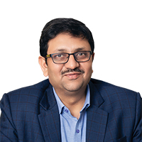
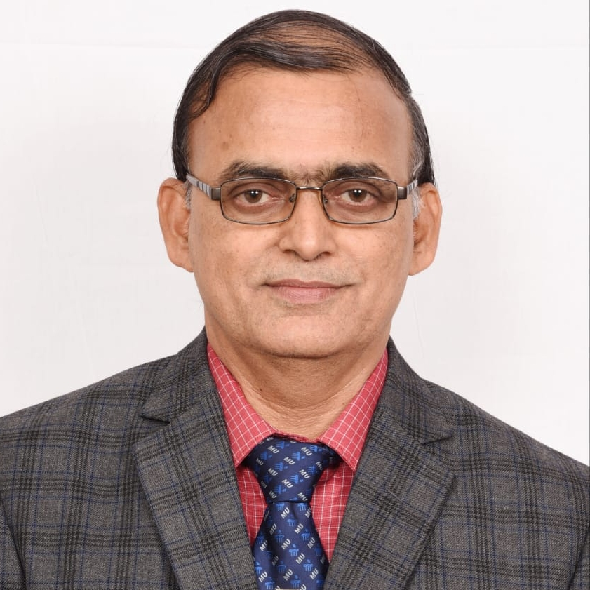
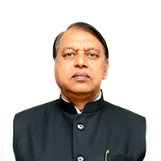

 Prof. Udaykumar R. Yaragatti Director, MNIT Jaipur
 Prof G. K. Prabhu President, MUJ
 Prof N. N. Sharma Pro-President, MUJ
 Prof Jagannath Korody Dean FoE, MUJ
 Prof R. S. Shekhawat Director SCIT, MUJ
Organized By: School of Electrical, Electronics and
Communication Engineering, Manipal University Jaipur